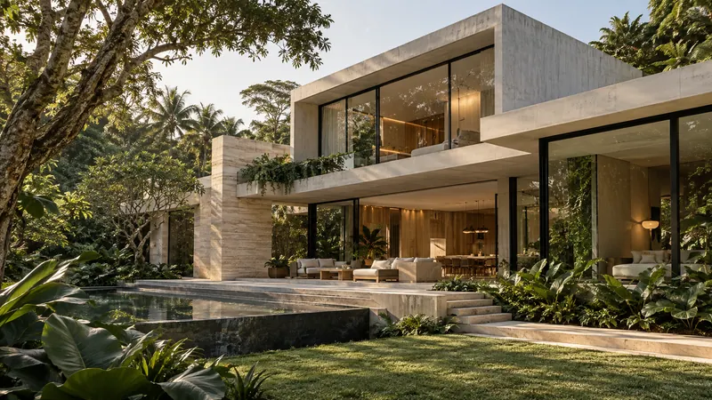
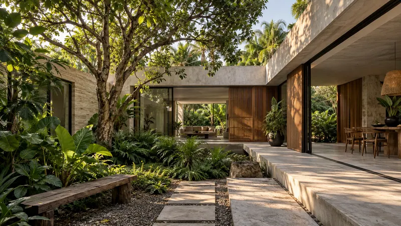
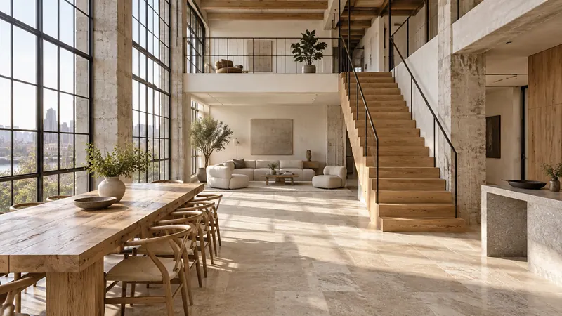
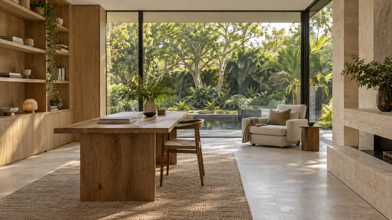
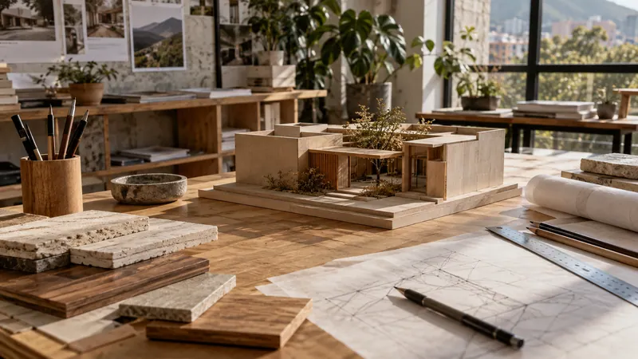

Arquitectura · interiores · paisaje
Espacios para sentir más
- Nº 01
- Casa Umbral
- Lugar
- Anapoima, Cundinamarca
Diseñamos casas, interiores y jardines para el clima del trópico: sombra antes que aire acondicionado, luz que cambia durante el día y materiales que mejoran con los años.
- 01Arquitectura residencial
- 02Interiores y rehabilitación
- 03Paisaje y espacios abiertos
Proyectos seleccionados
Formas de habitar.
Del patio tropical a un loft urbano. Cada proyecto empieza por las personas que lo van a vivir.
6 proyectos




Casa del patio · del boceto a la obra
Primero se dibuja la sombra.
Arrastra la línea para comparar el primer boceto del patio con la imagen final del proyecto.
Boceto generado a partir de la imagen para este concepto. En un proyecto real aquí irían los dibujos del estudio.
Proceso
De la primera conversación a la obra.
Cinco etapas, cada una con un entregable concreto. Siempre sabes qué recibes, cuándo decides y qué viene después.
Plazos orientativos para una vivienda de unos 200 m².
- 01
Conversación
Semana 1
Una llamada o un café de 45 minutos. Hablamos de cómo vives, qué te sobra, qué te falta y del presupuesto con números reales.
RecibesResumen de la conversación y propuesta de honorarios.
- 02
Visita y levantamiento
1 a 2 semanas
Recorremos el terreno o la casa: orientación, vientos, vistas, árboles que se quedan y medidas exactas.
RecibesPlanos del estado actual y estudio de sol y sombra.
- 03
Anteproyecto
3 a 5 semanas
Exploramos dos o tres caminos con plantas, maqueta e imágenes. Decidimos juntos cuál seguir.
RecibesPlanos generales, maqueta de estudio e imágenes del espacio.
- 04
Proyecto ejecutivo
6 a 10 semanas
Detallamos todo lo que la obra necesita: estructura, instalaciones, carpinterías y materiales. Te acompañamos en la licencia.
RecibesPlanos para licencia y obra, y presupuesto por partidas.
- 05
Obra y acompañamiento
Lo que dure la obra
Visitamos la obra, resolvemos dudas del constructor y cuidamos que lo dibujado se construya bien.
RecibesActas de visita y registro de cada cambio.
Lo que guía cada decisión
Menos ruido.
Más espacio para vivir.
Escuchamos tus rutinas antes de dibujar. Trabajamos con volúmenes sencillos y pocos materiales, bien elegidos, para que el espacio se entienda sin explicaciones.
- La luz primero
- Orientamos cada espacio antes de decidir su forma. Una ventana bien puesta ahorra una lámpara.
- Sombra y aire
- Aleros, celosías y ventilación cruzada para una casa fresca sin depender del aire acondicionado.
- Materia honesta
- Piedra, madera, cal y concreto a la vista. Materiales que se pueden tocar y que envejecen con dignidad.
Del primer trazo al detalle
Un proyecto,
pensado completo.
01
Arquitectura residencial
Programa, distribución, orientación y relación con el terreno. Una base clara para habitar mejor.
02
Interiores y rehabilitación
Reorganización de espacios, mobiliario, luz y materialidad. Leer lo que existe para imaginar lo que puede ser.
03
Paisaje y espacios abiertos
Patios, terrazas y jardines que conectan el interior con el clima y la vegetación del lugar.
Tu proyecto
¿Tienes un lote, una casa por reformar o solo una idea?
Cuéntanos tu proyecto en tres minutos: tipo, metros, lugar y presupuesto aproximado. Con eso preparamos un brief y te proponemos una fecha para visitar el lugar.
- 01Respondes seis preguntas sencillas
- 02El estudio recibe un brief ordenado
- 03Eliges el día de la visita
- 04Te llega la confirmación por WhatsApp